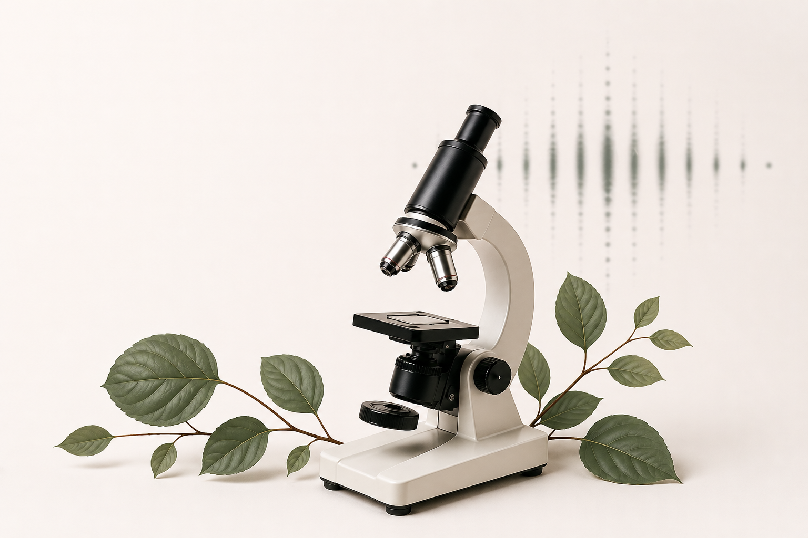

Exploro a interseção entre biologia e física para entender sistemas complexos e compartilhar ciência com propósito.

Artigos científicos e projetos acadêmicos e pessoais que unem biologia, física e educação.
Explorar →Códigos e pipelines para análise de dados, simulações e visualizações científicas.
Ver Códigos →Simulações interativas desenvolvidas para disciplina experimental de física baseadas em experimentos reais.

Analise o movimento harmônico amortecido observando como a amplitude diminui ao longo do tempo devido ao amortecimento.
Abrir experimento →
Identifique elementos desconhecidos pela emissão característica de suas lâmpadas: a luz passa por uma rede de difração e o padrão obtido revela o elemento.
Abrir experimento →
Solte esferas em um fluido viscoso e analise se o regime é laminar ou turbulento, explorando os princípios da hidrodinâmica.
Abrir experimento →Da pesquisa à ferramenta: ciência que gera conhecimento e soluções.
ACS Omega, 8(35), 2023
Análise conformacional de proteínas em solução por espalhamento de raios-X a baixo ângulo, investigando mudanças estruturais e estabilidade.
Ler publicação →Ferramentas desenvolvidas para análise de dados e automação de processos.
Processamento e análise de dados de espalhamento de raios-X a baixo ângulo, incluindo cálculo de Rg.
Ajuste de espectros e análise de fluorescência com visualização interativa.